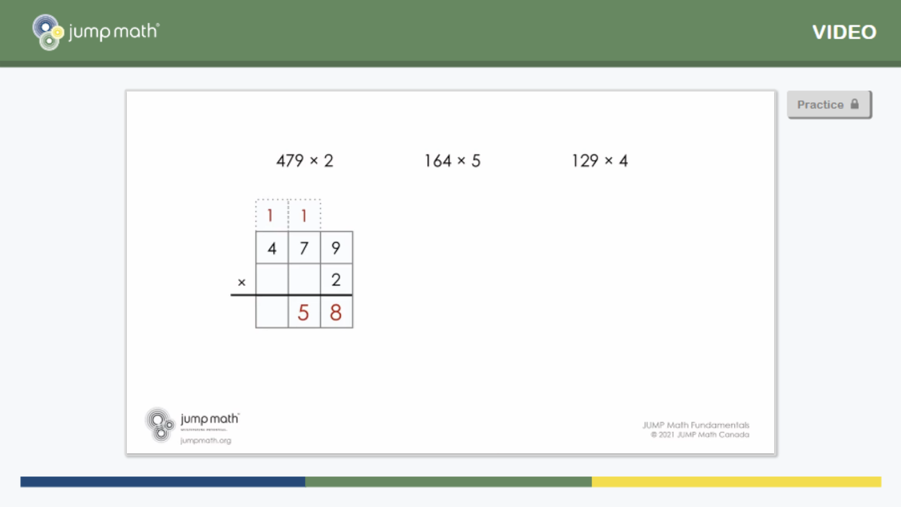
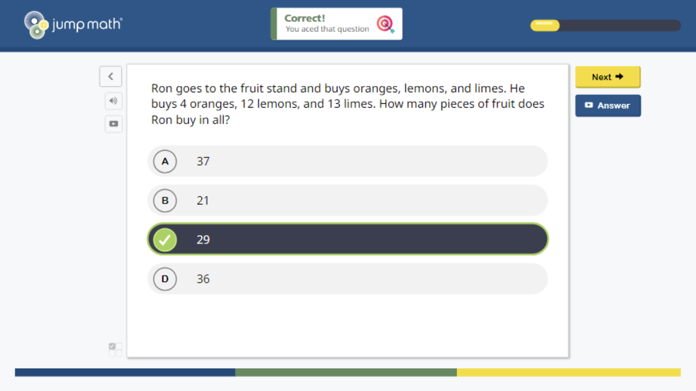

INVENTORY · 8 OF 8
Prototyping
Making a rough version early and putting it in front of the people who will use it. Prompts, cards, Figma or a working tool.
WHERE IT SHOWS UP
What each prototype was made of
Three rounds in Figma
Each round answered one question: can a teacher read this and know what to do next lesson?


Dark horse, funky, then one system
In the second diamond: critical experience prototypes, then dark horse and funky prototypes, then one merged functional system. In the third, CO/LAB was built and tested against a real case.
- 01Critical experience prototypesDiamond 2.
- 02Dark horse and funky prototypesDiamond 2.
- 03One functional systemFebruary 2022.
- 04CO/LABBuilt, tested against a real case, pitched at the SUGAR Expo.
A deck of cards before a screen
Beeline Unplugged?BEELINE UNPLUGGEDThe offline card toolkit version of Beeline, for groups with low digital access or additional needs. runs the discovery logic without a screen. It was field tested in six settings between February and May 2026, from crowds and noise to a room with employers in it.
OPEN BEELINE UNPLUGGED ▸Prompts as prototypes
Prompt databases and anchor answers for every activity, piloted in 10 representative franchise schools before launch.
OPEN NOTE 02 ▸